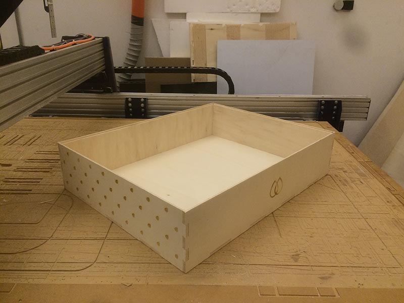

Intro
In the next weeks I'm going to build an exposure unit. It's a device used to make the cliché for screen printing, a ink transfer printing technique. Long story short it's used to expose to light a screenprint frame coated with a photosensitive emulsion: the light make this emulsion hard, corking the cloth on the frame.
In order to get a graphic on the frame a transparent film – with the graphic printed in black – is placed between the light and the coated frame: the emulsion won't harden in these shaded points and will be washable. The ink will go through the cloth thanks to the pressure of a squeegee, just opposite of what happens where the emulsion has become hard.
The project
What I would achieve is an exposure unit that:
- Burns well the frame
- vacuum system integrated
- Fluorescent attinic tubes (good for some kind of emulsions) 10x18watt
- Gives you useful data
- Light emitted
- Light's wavelength
- Temperature and umidity
- pressure of the vacuum
- Automates some processes and stores data
- timer
- Save time presets
- Store the data of (lux, time, wavelength) of each exposure
- time integration based on the light emitted (more info)
- automatically activate the compressor for the vacuum, turn on the light and keep the vacuum until the end of the timer.
- Have a dedicated space for the frame storage and dry
Parts and systems
I've divided in 9 parts the project, helping me to develop each one in parallel and integrate it if the testing gave good results
- The main structure
- The illumination
- The timer
- The vacuum system
- Sensors
- Interface on computer
- Interface on the unit
- Dryer and storage
- Timer integration based on lux emitted
First prototype, 20th june

First prototype of the structure
- The main structure (beta)
- The illumination
- The timer
- The vacuum system
- Sensors
- Temperature & Umidity
- Lux emitted & Wavelength
- pressure sensor
- Interface on computer
- Interface on the unit
- Dryer and storage
- Timer integration based on lux emitted
Components
- Structure (beta)
wooden box (18mm thick) 71x91x20
- Illumination
- Timer
- Sensors